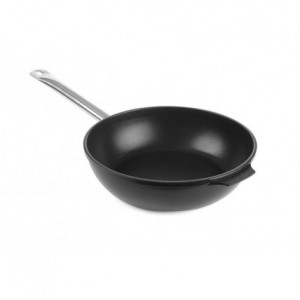

Welcome to keptuvės
Keptuvės internetu patrauklią kaina | Žana
2020.10.29 08:40Pristatymas Garantija ir grąžinimas Apie mus Žana indų salonai Kontaktai +37068717663 I-IV 8:15-17:00; V 8:15-15:45 0 0 Prisijungti Registruotis Prekių katalogas % Akcijos Prekiniai ženklai Indų nuoma % Išpardavimas Pristatymas Privatumo politika Grįžti atgal Kalėdinės prekės
Kalėdiniai žaisliukai
Išskleisti kategorijas SuskleistiKalėdiniai puodeliai
Išskleisti kategorijas SuskleistiKalėdinės lėkštės
Išskleisti kategorijas SuskleistiKalėdinės žvakės ir žvakidės
Išskleisti kategorijas SuskleistiKalėdinės dekoracijos
Išskleisti kategorijas SuskleistiKalėdinės lemputės
Išskleisti kategorijas Suskleisti Stalo serviravimo indaiLėkštės
Pietų lėkštės Lėkštės sriubai Lėkštės užkandžiams Serviravimo lėkštės Išskleisti kategorijas SuskleistiServizai
Pietų servizai Arbatos servizai Kavos servizai Išskleisti kategorijas SuskleistiDubenėliai ir salotinės
Dubenėliai Salotinės Padažinės Sultininės Išskleisti kategorijas SuskleistiStalo įrankiai
Šakutės Peiliai Šaukštai Šaukšteliai ... Išskleisti kategorijas SuskleistiPuodeliai
Kavos puodeliai Arbatos puodeliai Puodeliai su lėkštutėmis Dideli puodeliai ... Išskleisti kategorijas SuskleistiStiklinės
Aukštos stiklinės Žemos stiklinės Viskio stiklinės Dvigubo stiklo stiklinės Išskleisti kategorijas SuskleistiTaurės
Vyno taurės Šampano taurės Kokteilių taurės Alaus taurės ... Išskleisti kategorijas SuskleistiStikliukai ir taurelės
Stikliukai Taurelės Išskleisti kategorijas SuskleistiĄsočiai
Išskleisti kategorijas SuskleistiGrafinai
Išskleisti kategorijas SuskleistiIndai desertams
Išskleisti kategorijas SuskleistiPrieskoninės ir padažinės
Prieskoninės Indeliai actui ir aliejui Išskleisti kategorijas SuskleistiSviestinės
Išskleisti kategorijas SuskleistiStalo aksesuarai
Servetėlių laikikliai ir žiedai Stalo padėkliukai ir kilimėliai Dekoratyviniai padėklai Etažerės ... Išskleisti kategorijas SuskleistiSmulkūs serviravimo indai
Išskleisti kategorijas SuskleistiVaikiški indai
Išskleisti kategorijas SuskleistiTortinės
Išskleisti kategorijas Suskleisti Virtuvės reikmenysPuodai ir greitpuodžiai
Puodai Dideli puodai Ketaus puodai Puodų rinkiniai ... Išskleisti kategorijas SuskleistiKeptuvės ir dangčiai
Keptuvės Keptuvės lietiniams Ketaus keptuvės Wok keptuvės ... Išskleisti kategorijas SuskleistiKepimo formos
Stiklinės kepimo formos Metalinės kepimo formos Keramikinės kepimo formos Silikoninės kepimo formos ... Išskleisti kategorijas SuskleistiVirtuvės įrankiai
Sulčiaspaudės Samčiai ir kiaurasamčiai Koštuvai ir sieteliai Rankiniai plaktuvai ir grūstuvai ... Išskleisti kategorijas SuskleistiVirtuviniai peiliai ir galąstuvai
Virtuviniai peiliai Peilių blokai ir rinkiniai Peilių galąstuvai Peilių laikikliai Išskleisti kategorijas SuskleistiVirduliai, kavinukai ir arbatinukai
Kavinukai Arbatinukai Virduliai Kavinukų, arbatinukų aksesuarai Išskleisti kategorijas SuskleistiPjaustymo lentelės
Medinės pjaustymo lentelės Plastikinės pjaustymo lentelės Išskleisti kategorijas SuskleistiMaisto laikymo indai
Indai maisto laikymui Hermetiniai indai maisto laikymui Indai biriems produktams Termo krepšiai Išskleisti kategorijas SuskleistiGertuvės
Išskleisti kategorijas SuskleistiMetaliniai dubenys
Išskleisti kategorijas SuskleistiKonditerijos reikmenys
Išskleisti kategorijas SuskleistiSmulkūs virtuvės reikmenys
Išskleisti kategorijas SuskleistiFormelės ledukams
Išskleisti kategorijas SuskleistiVirtuviniai aksesuarai
Išskleisti kategorijas SuskleistiVirtuvės tekstilė
Išskleisti kategorijas SuskleistiDuoninės
Išskleisti kategorijas SuskleistiPicerijų reikmenys
Išskleisti kategorijas SuskleistiMatavimo prietaisai
Svarstyklės Termometrai Išskleisti kategorijas Suskleisti Namų interjeruiDirbtinės gėlės
Išskleisti kategorijas SuskleistiŽvakės
Išskleisti kategorijas SuskleistiŽvakidės
Išskleisti kategorijas SuskleistiStatulėlės
Išskleisti kategorijas SuskleistiDekoratyvinės dėžutės
Išskleisti kategorijas SuskleistiVazos
Išskleisti kategorijas SuskleistiAksesuarai
Išskleisti kategorijas SuskleistiKvapai
Kvapai namams Difuzoriai Parfumuotos kortelės Parfumuotos žvakės Išskleisti kategorijas SuskleistiMaison Berger kvapų lempos ir namų kvapai
Maison Berger kvapų lempos Maison Berger kvapų lempų papildymai Maison Berger namų kvapai Maison berger namų kvapų papildymai ... Išskleisti kategorijas Suskleisti Namų apyvokos reikmenysŠiukšliadėžės
Išskleisti kategorijas SuskleistiLyginimo lentos
Išskleisti kategorijas SuskleistiIndų džiovyklos
Išskleisti kategorijas SuskleistiDaiktų laikymo dėžės
Išskleisti kategorijas SuskleistiMuilinės ir muilo dozatoriai
Išskleisti kategorijas SuskleistiVonios kambario aksesuarai
Išskleisti kategorijas SuskleistiRankšluosčiai
Išskleisti kategorijas SuskleistiMuilai
Išskleisti kategorijas Suskleisti Baro reikmenysKokteilių plaktuvės
Išskleisti kategorijas SuskleistiKamščiatraukiai
Išskleisti kategorijas SuskleistiLedo kibirėliai
Išskleisti kategorijas SuskleistiMenzūros
Išskleisti kategorijas SuskleistiAtidarytuvai
Išskleisti kategorijas SuskleistiŠiaudeliai
Išskleisti kategorijas SuskleistiSmulkūs baro reikmenys
Išskleisti kategorijas Suskleisti Pobūviams, pusryčių stalui ir maisto išvežimuiGN indai
Metaliniai GN indai Plastikiniai GN indai GN indų dangčiai Išskleisti kategorijas SuskleistiVirtuviniai padėklai
Išskleisti kategorijas SuskleistiMarmitai
Išskleisti kategorijas SuskleistiServiravimo indai
Išskleisti kategorijas SuskleistiPerkolatoriai
Išskleisti kategorijas SuskleistiTermosai
Išskleisti kategorijas SuskleistiMelamino indai
Išskleisti kategorijas SuskleistiKonditeriniai stovai ir gaubtai
Išskleisti kategorijas SuskleistiGėrimų dalytuvai
Išskleisti kategorijas Suskleisti Profesionali virtuvės įrangaŠaldymo įranga
Išskleisti kategorijas SuskleistiSmulki virtuvės įranga
Išskleisti kategorijas Suskleisti Vienkartiniai indai ir pakavimasVienkartiniai indai maisto išsinešimui
Išskleisti kategorijas SuskleistiVienkartinės lėkštės
Išskleisti kategorijas SuskleistiVienkartiniai stalo įrankiai
Išskleisti kategorijas SuskleistiVienkartiniai puodeliai, stiklinės ir taurės
Išskleisti kategorijas SuskleistiMaisto pakavimo prekės
Išskleisti kategorijas SuskleistiVienkartiniai padėklai
Išskleisti kategorijas Suskleisti Dovanų čekiai Visos KategorijosFiltras
Virtuvės reikmenys
Keptuvės ir dangčiai
Keptuvės Keptuvės lietiniams Ketaus keptuvės Wok keptuvės Keptuvių dangčiai Visos KategorijosPrieinamumas
Neturime
Yra sandėlyje
Prekės ženklas
Amber Chef
Ballarini
Hendi
Pintinox
Pyrex
Tognana
WAS Germany
Zwilling
DaugiauKaina
Aukštis
3,6 cm
4,5 cm
5,4 cm
5,5 cm
6 cm
DaugiauPagaminta iš
Aliuminis
Ketus
Nerūdijantis plienas
Plienas
Tūris
0,85 l
2,05 l
Spalva
Juoda
Pilka
Sidabrinė
Gamintojas
Amber Chef
Ballarini
Hendi
Pintinox
Pyrex
Tognana
WAS Germany
DaugiauPrekių grupė
Gilios keptuvės
Indukcinės gilios keptuvės
Indukcinės keptuvės
Keptuvė
Keptuvės
Keptuvės paelijai
DaugiauKolekcija
Ambiziosa
OPTIMA +
Profi Line
Rame
Salina
Servintola
Stone Line
Titanium Professional
DaugiauTinka indaplovei
Taip
Tinka indaplovei
Skersmuo
14 cm
18 cm
20 cm
22 cm
24 cm
26 cm
28 cm
32 cm
36 cm
40 cm
DaugiauDanga
Granitinė
Granito nelimpanti
Nelimpanti
Titano nelimpanti
Tinka indukcinei viryklei
Ne
Taip
Tinka indukcinei viryklei
Dydis
14 cm
24 cm
28 cm
Išvalyti filtrus Atlikta Pagrindinis Virtuvės reikmenys Keptuvės ir dangčiai KeptuvėsKeptuvės
Geriausiems namų šefams jokia paslaptis, kad daugiau nei pusė ruošiamo patiekalo sėkmės slypi aukštos kokybės keptuvėje. Ji atlieka begalę skirtingų funkcijų: keptuvės suteikia galimybę maistą pašildyti, patroškinti, apskrudinti, pakepinti. Naudodamiesi vienu virtuvės pagalbininku galite pasigaminti daugybę skirtingų patiekalų. Keptuvės internetu šiandien kaip niekada pasižymi skirtingų tipų gausa. Svarbu atminti, jog įvertinę savo poreikius nesunkiai išsirinksite tinkamiausią savo šeimai. Zana.lt tuo jau pasirūpino! Filtras RūšiuotiRūšiuoti
Rodyti per puslapį 36 64 128 per puslapį Rūšiuoti pagal Pigiausi viršuje Brangiausi viršuje Naujausios prekės Perkamiausios prekės Geriausiai įvertintos prekės Atlikta HoReCa NetoEmaliuota keptuvė Hendi PAELLA, 20 cm *
8,10 € Į krepšelį Plačiau IšpardavimasKeptuvė Pyrex ORIGIN+, 24 cm
28,90 €
11,56 €sutaupote: 17.34 €
Į krepšelį Plačiau NetoKetaus keptuvė su mediniu padėklu serviravimui WAS Germany, 22 cm *
12,30 € Į krepšelį Plačiau NetoOvali ketaus keptuvė su mediniu padėklu serviravimui WAS Germany, 24x17cm *
12,55 € Į krepšelį PlačiauKeptuvė Ballarini SERVINTAVOLA, 14 cm
17,70 € Į krepšelį PlačiauKeptuvė Ballarini SERVINTAVOLA, 14 cm
17,70 € Į krepšelį PlačiauIndukcinė keptuvė Amber Chef STONE LINE, 26 cm
19,90 € Į krepšelį Plačiau AkcijaIndukcinė keptuvė Amber Chef STONE LINE, 28 cm
21,90 € Į krepšelį PlačiauKeptuvė nelimpančia danga Pyrex OPTIMA +, 24 cm
23,30 € Į krepšelį PlačiauKeptuvė nelimpančia danga Pyrex OPTIMA +, 26 cm
26,30 € Į krepšelį PlačiauKeptuvė nelimpančia danga Pyrex OPTIMA +, 28 cm
29,30 € Į krepšelį PlačiauKeptuvė Ballarini BOLOGNA su granito danga, 24 cm
39,00 € Į krepšelį Plačiau AkcijaIndukcinė keptuvė Tognana AMBIZIOSA, 20 cm
39,00 € Į krepšelį Plačiau HoReCa NetoKeptuvė Hendi PROFI LINE, 24 cm *
42,00 € Į krepšelį Plačiau HoReCa NetoKeptuvė Hendi PROFI LINE, 28 cm *
48,80 € Į krepšelį Plačiau AkcijaKeptuvė Ballarini BOLOGNA su granito danga, 28 cm
49,00 € Į krepšelį PlačiauIndukcinė keptuvė Tognana AMBIZIOSA, 26 cm
51,00 € Į krepšelį Plačiau AkcijaGili keptuvė Ballarini Bologna su granito danga, 28 cm
55,00 € Į krepšelį Plačiau HoReCa NetoIndukcinė aliuminio titano dangos keptuvė Hendi TITANIUM PROFESSIONAL, 28 cm *
56,00 € Į krepšelį Plačiau HoReCa NetoAliuminio titano dangos keptuvė Hendi PROFI LINE, 32 cm *
56,00 € Į krepšelį PlačiauIndukcinė gili keptuvė Tognana AMBIZIOSA, 28 cm
58,50 € Į krepšelį PlačiauIndukcinė aliuminė keptuvė Ballarini SALINA, 20 cm
59,00 € Į krepšelį PlačiauVarinė keptuvė Pintinox RAME, 18 cm
60,50 € Į krepšelį Plačiau AkcijaKeptuvė Zwilling MADURA PLUS, 20 cm
62,00 € Į krepšelį Plačiau HoReCa NetoIndukcinė aliuminio titano dangos keptuvė Hendi TITANIUM PROFESSIONAL, 32 cm *
62,00 € Į krepšelį PlačiauIndukcinė aliuminė keptuvė Ballarini SALINA, 24 cm
69,00 € Į krepšelį Plačiau HoReCa NetoAliuminio titano dangos keptuvė Hendi PROFI LINE, 36 cm *
72,25 € Į krepšelį Plačiau HoReCa NetoAliuminio titano dangos keptuvė Hendi PROFI LINE, 40 cm *
85,00 € Į krepšelį PlačiauVarinė keptuvė Pintinox RAME, 28 cm
102,70 € PlačiauDidelė tipų įvairovė
Tam, kad pasirinkti būtų šiek tiek lengviau, verta išskirti pagrindinius keptuvių tipus, kurių kiekviena pasižymi skirtingomis savybėmis ir gali būti naudojama individualiems poreikiams patenkinti. Zana.lt asortimente galite rinktis iš tokių keptuvių:
su nelimpančia danga; skirtų indukcinei viryklei; gamintojo „Pyrex”; gamintojo „Tefal”.
Keptuvės su nelimpančia danga padengtos dviejų sluoksnių „Xylan Plus“ paviršiumi, kuris yra atsparus subraižymams, be to, naudojantis šia keptuve jums nereikės naudoti daug aliejaus, tad maistą gaminsite sveikiau. Indukcinei viryklei skirtos keptuvės internetu Zana.lt parduotuvėje pasižymi nekaistančia, silikonu padengta rankena, ją galima naudoti visų tipų viryklėms.
Taip pat mūsų el. parduotuvėje galite rasti aukštos kokybės prancūzų gamintojo „Pyrex” keptuves. Visame pasaulyje šis prekių ženklas žinomas kaip naudojantis platų kokybiškų medžiagų asortimentą bei kuriantis šiuolaikiško dizaino reikmenis. Jas turėtų rinktis tie, kurie nori išskirtinės kokybės ir patogumo.
„Tefal” keptuvės , gerai žinomos visoje Lietuvoje, puikuojasi ir mūsų parduotuvėje. Jos ypatingos tuo, jog turi „Thermo-Spot“ technologiją – tai šilumos indikatorius centre, kuris parausta, kai keptuvė pasiekia optimalią kepimo temperatūrą. Dėl „Durabase” funkcijos šiluma pasiskirsto greitai ir tolygiai.
Tiems, kas mėgsta gaminti orkaitėje
Gilios, rankenėles iš abiejų pusių turinčios keptuvės puikiai tiks tiems, kurie mėgsta maistą gaminti orkaitėje. Šios itin kokybiškos ir praktiškos keptuvės internetu taip pat gali būti naudojamos patiekalus kepant ant viryklės. Todėl galite mėgautis patiekalais, kuriuos reikia paskrudinti, o kiek vėliau iškepti orkaitėje, jog atsiskleistų jų skonis.
Gamintojo „Hendi” gili keptuvė tinkama naudoti visoms viryklėms, išskyrus indukcines, o prekių ženklas „Tognana” siūlo gaminius, kuriuos galima naudoti stiklo keramikos, halogeno, dujinei, elektrinei ir indukcinei viryklėms. Taigi, čia kiekvienas ras tai, ko jam reikia.
Verta paminėti, kad aukštą kokybę puoselėjančios el. parduotuvės Zana.lt asortimente galite rasti ne tik patogių, ilgai tarnausiančių keptuvių, tačiau ir viską, ko tik gali prireikti bet kuriam virtuvės šefui. Kviečiame pasidairyti po asortimentą ir susipažinti su plačiu prekių katalogu, kuriame keptuvės, stalo serviravimo indai ir visi reikalingi virtuvės reikmenys laukia jūsų! Keptuvės internetu – tik dalis mūsų plačios pasiūlos.
Prekių katalogas
Sumažinta kaina Naujos prekės Perkamiausios prekėsInformacija klientams
Pristatymas Privatumo politika Garantija ir grąžinimas Apie mus Pirkimo-pardavimo taisyklės Kontaktai Žana indų salonaiTavo paskyra
Asmeninė informacija Užsakymai Adresai Mano asortimentas Mano duomenysBendraukime
Žana - Indų salonų tinklas Neradai tai ko ieškojai ? Apsilankyk mūsų
parduotuvėse:
© 2012-2020 UAB "Arkietė" | zana.lt
Taikos pr. 100C, Kaunas, Lietuva
Model Popup